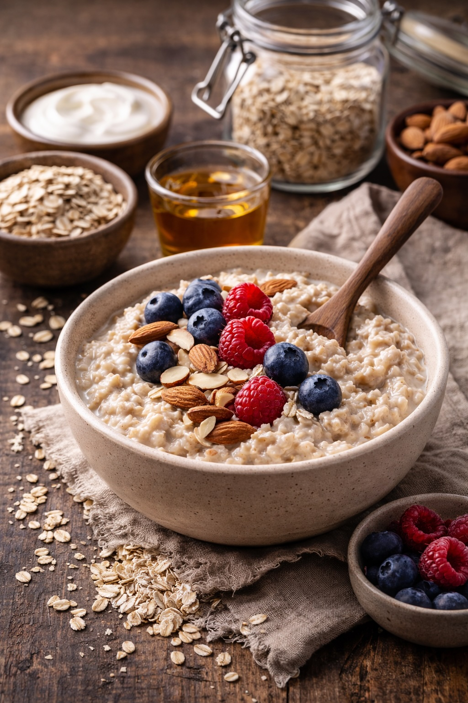

Superfoods: Oatmeal
Last updated: January 22, 2026

- Oats are a reliable “stability food” — filling, affordable, and easy to upgrade.
- Choose plain oats (rolled/steel-cut) and build flavor with whole-food add‑ins.
- Balance matters: add protein + healthy fat to reduce cravings and energy crashes.
- A few small tweaks (fiber, protein, timing) make oatmeal feel dramatically better.
Purpose: In uncertain times, resilient mornings matter. Oatmeal is one of the simplest ways to get steady energy, predictable digestion, and a calm start—without needing complicated ingredients.
Why oats are a “resilience staple”
Oats are mostly known as a heart-healthy breakfast, but the deeper advantage is reliability. They store well, cook quickly, and pair with almost anything. For many people, oats also support more stable appetite signals: you feel fed longer, snack less, and make better decisions because blood sugar and mood are steadier.
From a metabolic standpoint, oats shine because of their soluble fiber—especially beta‑glucans. Soluble fiber slows digestion and can soften the “spike‑and‑crash” effect that refined breakfast foods cause. In practical terms: oatmeal tends to feel calmer than cereal, pastries, or sweet yogurt.
Choosing the right oats
The best choice is usually the simplest: plain oats with no added sugar or flavoring. The “right” type depends on your goals and time.
Steel‑cut oats
Chewier, slower-digesting, and often the most “stable” feeling. Great if you batch-cook for 2–4 days.
Rolled oats
Fast, versatile, and easy. A strong everyday option—especially when paired with protein and fat.
Quick oats
Convenient but softer and faster-digesting. If you use them, balance the bowl (protein + fat) and go easy on sweeteners.
Instant packets
Often fine in a pinch, but many include added sugar, “natural flavors,” and oils. If you want the benefits, plain oats are usually a cleaner baseline.
If gluten is a concern, look for certified gluten‑free oats (cross‑contamination can happen in processing). Otherwise, prioritize simple ingredient lists and oats you’ll actually enjoy eating consistently.
Build a balanced bowl
The most common oatmeal mistake is making a bowl that’s basically a warm sugar bowl. It tastes great… then you’re hungry again soon. The fix is simple: treat oatmeal like a base, then add protein, healthy fat, and micronutrients.
A simple structure
- Base: rolled or steel‑cut oats + water or milk
- Protein: Greek yogurt, whey, hemp hearts, or eggs on the side
- Fat: nuts, nut butter, chia/flax, or a drizzle of olive oil (savory style)
- Flavor: cinnamon, vanilla, cocoa, or a pinch of salt
- Fiber & micronutrients: berries, apples, pumpkin, or seeds
If you notice cravings mid‑morning, don’t “fight willpower.” Increase protein and fat slightly and reduce sweeteners. Most people feel the difference within a day or two.
Sweet oatmeal without the blood‑sugar rollercoaster
You don’t have to remove sweetness—just make it supportive instead of dominant. A little fruit plus cinnamon often gives enough sweetness without needing large amounts of honey or syrup.
If you use sweeteners, think “accent,” not “main ingredient.” Start with a teaspoon, then add more only if needed. And pair sweetness with protein: a spoon of Greek yogurt or a side of eggs can transform how the meal feels.
Savory oatmeal (surprisingly good)
Savory oatmeal is an underrated resilience move: it’s warm, filling, and easy to make nutrient‑dense without sugar. Cook oats with broth instead of water, then top with eggs, sautéed greens, mushrooms, or leftover beans.
If you like soups and stews, savory oats will feel natural—like a soft grain bowl. It’s also a helpful option if you’re trying to reduce sugar cravings.
Practical daily ideas
The best system is the one you can repeat when you’re busy. Use these as “default templates,” then rotate toppings so it stays interesting.
- Classic: rolled oats + cinnamon + blueberries + walnuts + Greek yogurt
- Apple pie: oats + grated apple + cinnamon + pumpkin seeds + pinch of salt
- Chocolate-protein: oats + cocoa + peanut butter + whey/Greek yogurt
- Savory bowl: oats in broth + egg + spinach + olive oil + pepper
- Overnight oats: oats + milk + chia + berries (add protein at serving)
If you want the biggest “feel-good” improvement, add protein first. It’s the highest leverage upgrade for satiety and steady focus.
FAQ
Are oats “too many carbs”?
For many people, oats work well because fiber slows digestion. If you’re sensitive to carbs, reduce the portion (½ cup dry) and add protein and fat. The goal is stable energy—test and adjust based on how you feel.
What’s wrong with flavored packets?
Many packets add sugar, “natural flavors,” and sometimes oils. They’re not always “bad,” but they’re easier to overeat and often less satisfying. Plain oats let you control sweetness and build a more balanced bowl.
Steel-cut vs. rolled oats: which is best?
Steel-cut tends to digest slower and feel steadier; rolled is faster and more versatile. Both can be great—choose the one you’ll eat consistently.
How do I avoid “gummy” oatmeal?
Use a little more water, cook more gently, and add a pinch of salt. Toppings like nuts and fruit also improve texture.
Resources
Next steps
Continue with other Superfoods articles.
This article focuses on general food quality and metabolic resilience, not medical advice.